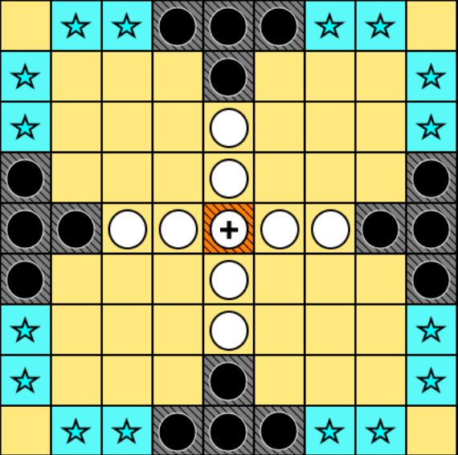

Progetti principali

UniBo Motorsport Driverless – Perception
Parte del team Perception della divisione Driverless di UniBo Motorsport, con focus su visione artificiale, YOLO, OpenVINO e triangolazione stereo per il riconoscimento ambientale in tempo reale.

Tablut AI
Client artificiale per il gioco Tablut, con strategie Minimax ed euristiche personalizzate per decision making efficiente.

Stage – Estensione libreria Python “softpy”
Sviluppo di estensioni per la libreria Python “softpy”, focalizzandomi su sistemi basati sulla logica fuzzy e algoritmi genetici, migliorando le capacità di calcolo e ottimizzazione della libreria.
SocialMesh
App Android per eventi e social matching: geolocalizzazione, filtro utenti, visualizzazione su mappa (API Ticketmaster e Google Maps).
Comparazione App E-commerce
Analisi UX/UI e test di usabilità comparativi su Vinted, eBay e Wallapop, con valutazione statistica dei risultati.
Parser JSON
Parser sviluppato in Prolog e Common Lisp per la lettura di strutture JSON complesse.
Image Processing & Computer Vision – Esame IPCV
Progetti multiapproccio (classico e deep learning): pipeline classica per rilevamento libri su scaffale e classificazione animali con ResNet-18 / CNN custom, studio di ablation con PyTorch.
Sports Tournament Scheduling Optimization
Studio e confronto di quattro approcci – CP, SAT, SMT, MIP – per la schedulazione di tornei, minimizzando squilibri casa/trasferta e garantendo distribuzione equa delle partite.
Image Deswirling con Deep Learning
Modelli deep learning per correggere distorsioni swirl con parametri variabili (centro, raggio, intensità). Pipeline end-to-end di restauro visivo con architetture personalizzate in TensorFlow.
R&D Intern – Datalogic USA, DLLABS (Eugene, Oregon)
Tirocinio di ricerca e sviluppo presso Datalogic Labs, partecipando ad attività di innovazione e sviluppo software per progetti nei campi dell’automazione e dell’intelligenza artificiale.